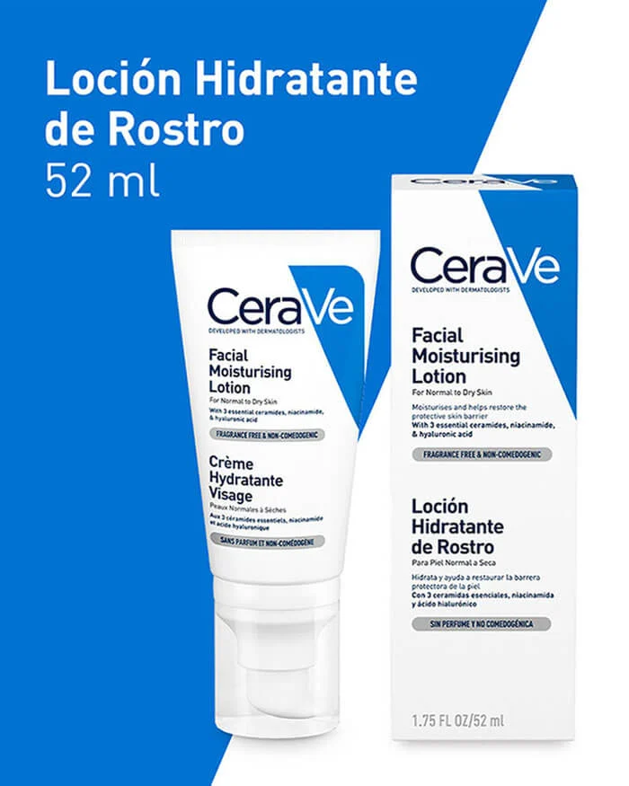
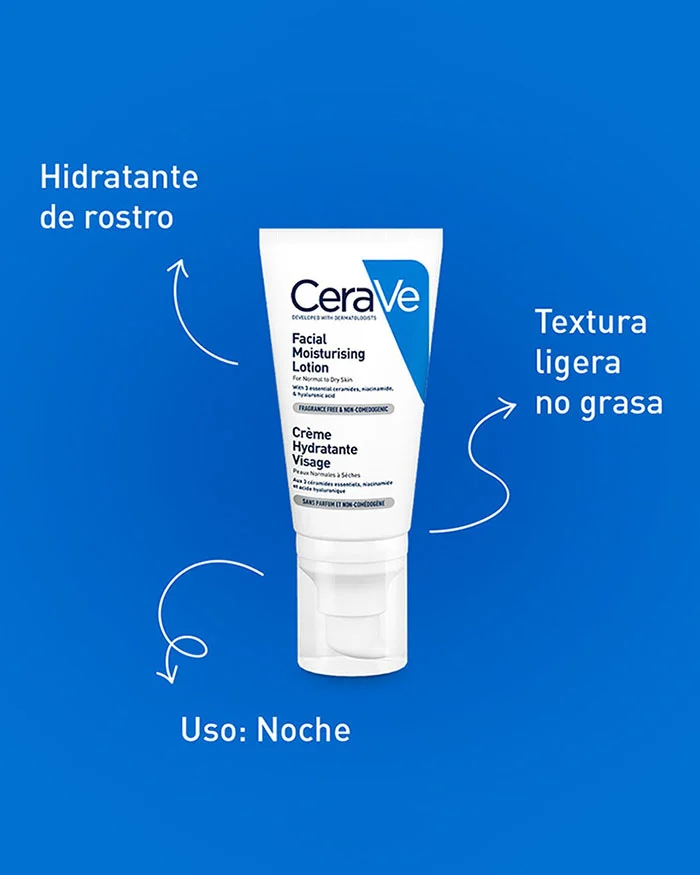

Loción hidratante facial de noche
Crema de noche ligera y sin aceites$36.550
Crema de noche con niacinamida
Su piel necesita hidratación las 24 horas del día, pero también puede necesitar otras cosas, como calmarse.
Una crema de noche que contenga niacinamida, para contribuir a calmar la piel mientras duerme, además de ácido hialurónico y ceramidas, puede ayudar a su piel a retener la humedad y restaurar la barrera cutánea mientras descansa.
Recomendamos una crema hidratante nocturna no comedogénica como la Loción hidratante facial de noche CeraVe, que está formulada con estos tres ingredientes y no obstruye los poros ni provoca brotes de acné.
Creada con dermatólogos, la Loción hidratante facial de noche CeraVe cuenta con tres ceramidas esenciales, ácido hialurónico y niacinamida en una fórmula libre de aceites y no comedogénica que puede hidratar y calmar la piel mientras ayuda a restaurar la barrera natural de la piel. Esta crema de noche, rica pero ligera, utiliza nuestra tecnología patentada MVE Delivery Technology para proporcionar un flujo constante de la tan necesaria hidratación durante toda la noche.
Adecuada para pieles normales a grasas.
| Ingredientes | Aqua / Agua / Eau, Glicerina, Triglicérido Caprílico/Cáprico, Niacinamida, Alcohol Cetearílico, Fosfato de Potasio, Ceramida NP, Ceramida AP, Ceramida EOP, Carbómero, Dimeticona |
| Contenido | 454g |
| Beneficios |
|
| Cómo ultilizarlo |
|